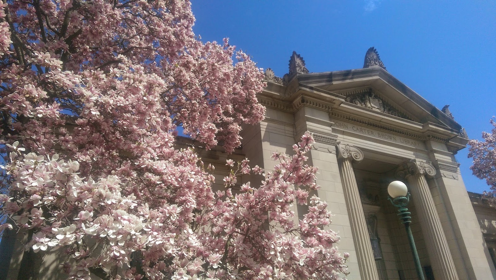

May 26, 2015
It's hard to believe that my first year is over. Just eleven days ago, I was still studying for my last final and scrambling to pack up in time for the end of freshman year.
When I say "just eleven days ago" I don't mean that time has gone by quickly outside of college. On the contrary, I feel like I've been home for a month already. Truly, the transition between college and home life warps one's sense of time. Such is the magnitude of the contrast between two. Going between them feels as if one were traveling between simultaneously familiar yet foreign countries. It's a surreal experience.
In retrospect, perhaps it is not just this transition, but the college life itself that feels surreal to me. My life as a college student felt both enlightening and confusing in ways that I find difficult to describe in words. Perhaps that is why in these past eleven days, the common question of, "So, how was college?" has continued to confound me. How does one capture the essence of being a college student? Which thoughts and experiences are the most important or defining?
I had planned to write this reflection two weeks ago during finals week. But I was, and still am unable to answer these questions. There are many possible reasons for this, but I think the most fundamental one is this: I find it extremely difficult, if not impossible to interpret college as more than a personal experience.
This year I experienced the deepest loneliness I've ever felt. But I also deepened my friendships and my familial relationships in a way I could not have understood at the beginning of the year. I've alternated between feeling like an utter fool and a passionate genius on a daily, sometimes hourly basis. I've clarified things I already knew about myself, and discovered completely new things as well. But as I continue to uncover more about myself and the world around me, I become conscious of the shadows I had ignored, and ultimately I am left with more mysteries than I solved.

The deepest reflections I have on college life are intensely individualistic and specific to my own immediate surroundings. I cannot think of a single ubiquitous concept.
Where then, does that leave this piece of writing? I guess you could say it is a testament of sorts. It's a testament to the wonderful strangeness of the college experience. Each student has a different story to tell. But perhaps it's one of those stories you can't understand properly until the end.